優化程式批改平台作業繳交與管理體驗
PDOGs 是台大資管系的程式作業批改平台。2023 年，我帶領 3 人設計團隊以「提升學生及助教使用體驗」為目標重新設計 PDOGs。我們透過重整平台資訊架構與系統流程，提升作業繳交效率；同時在助教端提供更明確的系統提示，讓助教能更輕鬆地掌握系統操作。
改善程式批改平台易用性問題，打造更流暢的學習與管理體驗
PDOGs 是什麼？
想像你是一位程式設計的初學者，在完成作業後，你迫不亟待地進入平台，貼上程式碼並按下繳交鍵，立刻就能看到自己的成績。這個平台就是 PDOGs (Programming Design Online Grading System)，每個學期陪伴 500 多位修習程式設計課程的學生，走過他們初次學習程式的旅程。
為什麼要重新設計 PDOGs？
經歷多個版本的迭代，PDOGs 逐步完善系統架構與使用體驗。然而，現有系統仍存在繳交作業流程繁瑣耗時、助教端系統不易上手的問題。因此，在這個版本的迭代中，我們希望改善既有的易用性問題，讓 PDOGs 能有效在課程中協助學生與助教完成任務。
專案目標：改善既有易用性問題，提升學生／助教使用系統的體驗，讓繳交與管理作業流程及資訊呈現更符合需求
四個方向重塑學生與助教的操作體驗
更簡潔、緊密的資訊呈現
重新定義欄位大小，並優先呈現使用者最關注的作業狀態，讓學生更有效率地找到所需資訊。
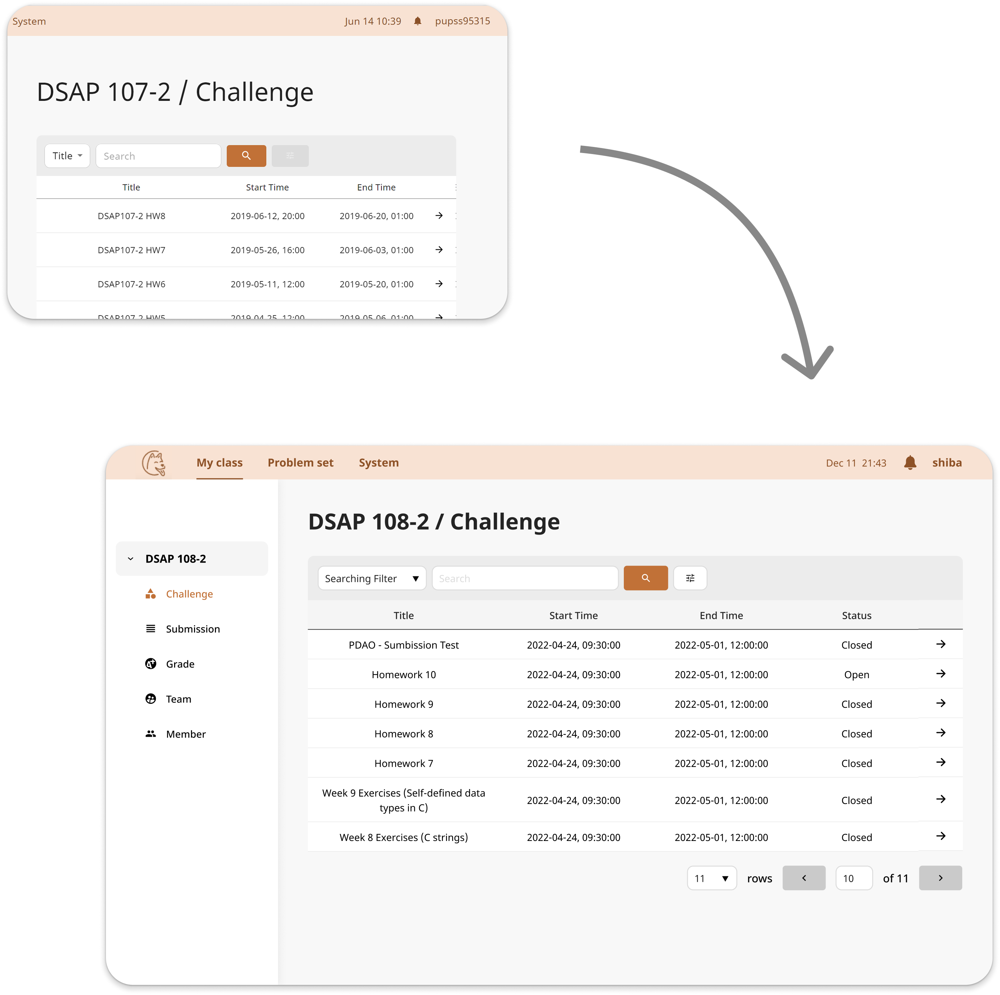
更直覺、友善的側邊欄操作
在返回鍵上標示將前往的頁面，避免操作錯誤，並加上作業狀態標示，幫助掌握作業繳交情形。
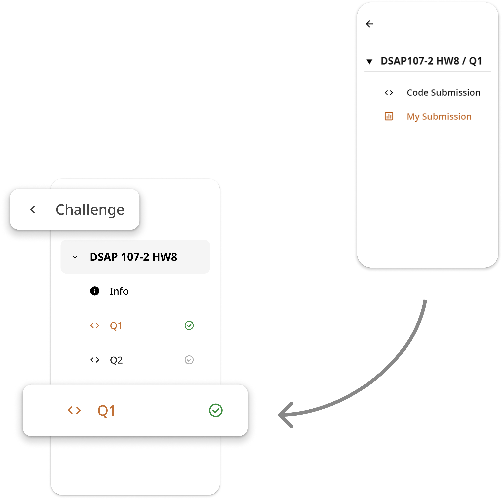
更清楚的系統回饋
在助教系統中補充專有名詞與資料輸入規則的解釋，並統一錯誤訊息格式，降低上手難度並幫助偵錯。
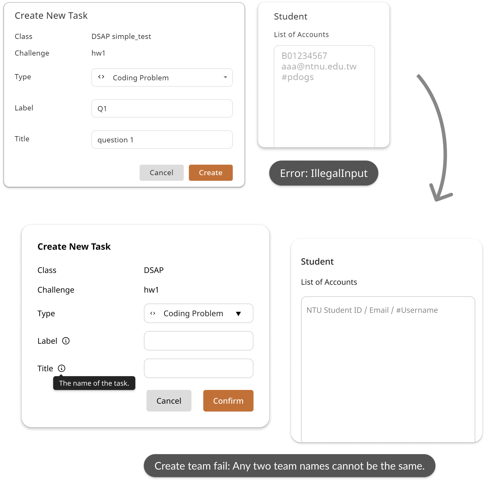
更順暢的跨裝置體驗
導入響應式設計，方便學生與助教在不同裝置上查看或管理作業。
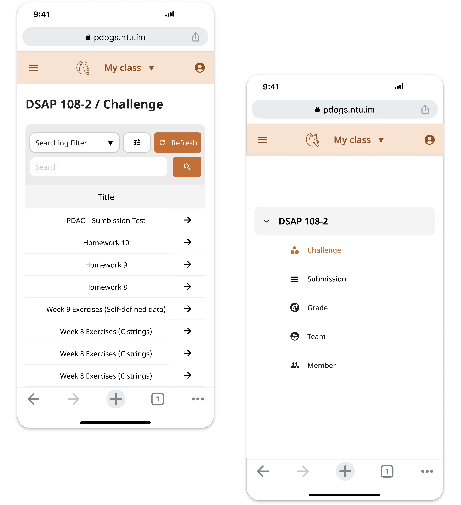
從使用者出發釐清系統現存問題，並與團隊同步收斂改進方向
為了深入了解學生與助教使用 PDOGs 的現況，我與設計團隊展開了初步研究。考量到專案時程有限，我盤點了內部資源，並與開發團隊討論後，將觀察到的問題進行分類與優先級排序，聚焦在解決對使用者影響最大且技術上可行的問題。
針對學生系統進行啟發式評估
由於所有團隊成員都曾經是 PDOGs 的使用者，我們回顧所有用戶流程 (User Flow)，並用便利貼標記曾在操作時感到困惑或尚待改進之處。接著，我將問題統整到表單中，並專注於解決對學生來說最重要的「繳交程式作業」流程中的問題。
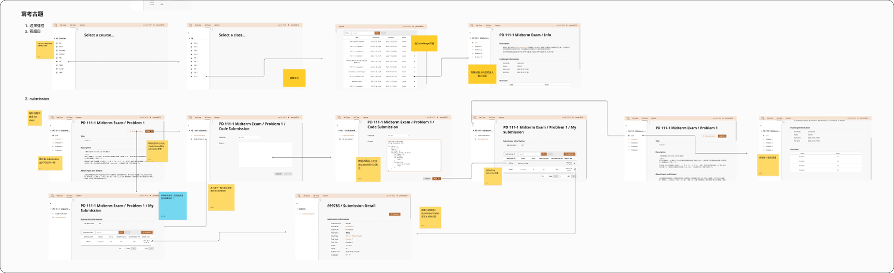
與助教的使用者訪談
由於助教端系統包含較複雜的功能，我規劃了與 6 位助教的使用者訪談，了解他們過去使用 PDOGs 的行為與挑戰，以找出助教端系統可以改進的地方。
訪談前：訪綱規劃
依照訪談曲線規劃訪綱問題，從較容易回答的背景資訊開始，逐步引導使用者分享實際操作的行為、想法與感受。
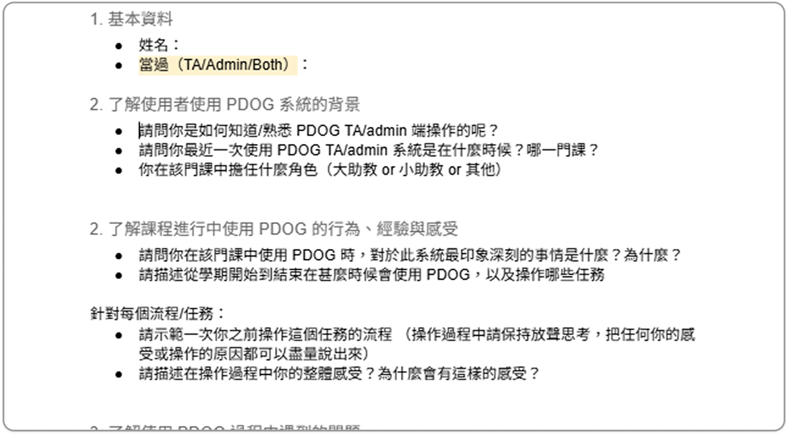
訪談中：半結構式訪談
請助教透過畫面分享日常操作流程及過去經驗，並透過「放聲思考法」說出操作過程中的想法。
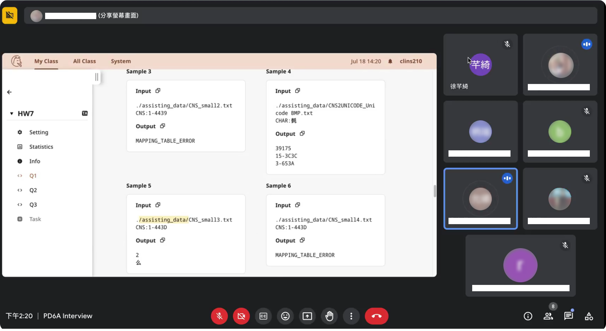
訪談後：問題收斂
訪談後，先透過親和圖歸類相似問題。與開發團隊討論後，進一步區分為「系統端」與「介面端」的問題。考量到系統端的改動成本高，「介面端」的問題成為我們後續著重改進的方向。
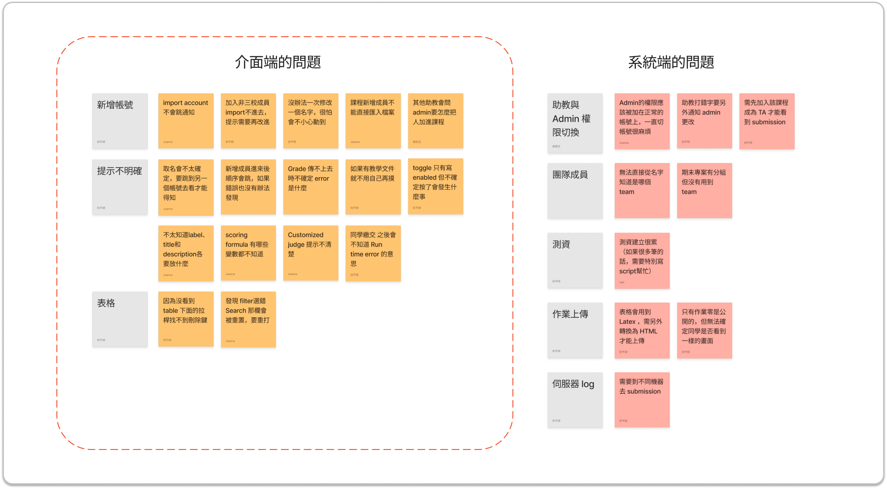
研究中發現的兩個核心洞察
「資訊鬆散」、「步驟繁瑣」、「操作不直覺」是繳交流程冗長的主要原因
 「我只是想快點交作業，為什麼每次都要先經過一堆步驟？」
「我只是想快點交作業，為什麼每次都要先經過一堆步驟？」
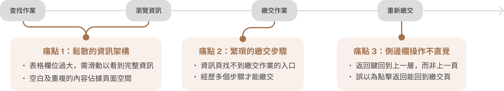
專有名詞與操作方式解釋不足，導致助教上手成本高
 「很多地方提示不清楚，都是靠助教口耳相傳才知道如何操作。」
「很多地方提示不清楚，都是靠助教口耳相傳才知道如何操作。」
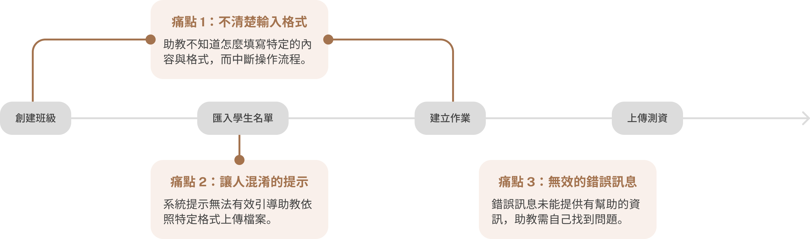
根據研究發現與團隊期望訂定設計目標
在和 PM 及開發團隊同步研究發現後，團隊回饋希望在此次的改版中同時導入響應式設計。因此，我結合研究發現與團隊期望訂定了以下的設計目標：
優化資訊架構
打造流暢的操作體驗
提供清楚的系統提示
增進跨裝置使用體驗
透過使用者測試驗證假設，作為推動設計改進的基石
我們針對上述設計目標提出初步提案。與團隊討論後，我意識到僅憑內部成員的意見作為設計決策方向，不足以說服 PM 與開發團隊進行改動。因此，我規劃了與 3 位 PDOGs 使用者的測試，驗證設計假設，幫助確立後續的設計方向並推動方案落地。
目標 #1 · 優化資訊架構
重新定義欄位寬度，最大化資訊呈現量
表格中每個欄位需要的長度不一，因此我們重新定義能夠在頁面上呈現最多資訊，又不會讓資訊被切割的欄位長度，妥善利用頁面空間。此外，我們透過測試驗證設計假設，優先呈現「狀態」欄位。
凸顯重要資訊
為了讓使用者可以更有效率的瀏覽資訊，我們重新調整了頁面的資訊架構，隱藏空白欄位，並將重複內容移至頁面下方。此外，從啟發式評估中我們發現比起分數，使用者更在乎作業是否有達到滿分。因此，我們在測試驗證後，在表格中呈現像是滿分、裁決（Verdict）等可以幫助使用者判斷作業完成狀態的依據。
1. 多數作業描述欄未為空
2. 作業資訊可以在前一頁的表格中看到
3. 僅顯示作業分數，使用者更在意是否達到滿分
「顯示作業完成狀態」對使用者來說比「單純顯示分數」更有幫助
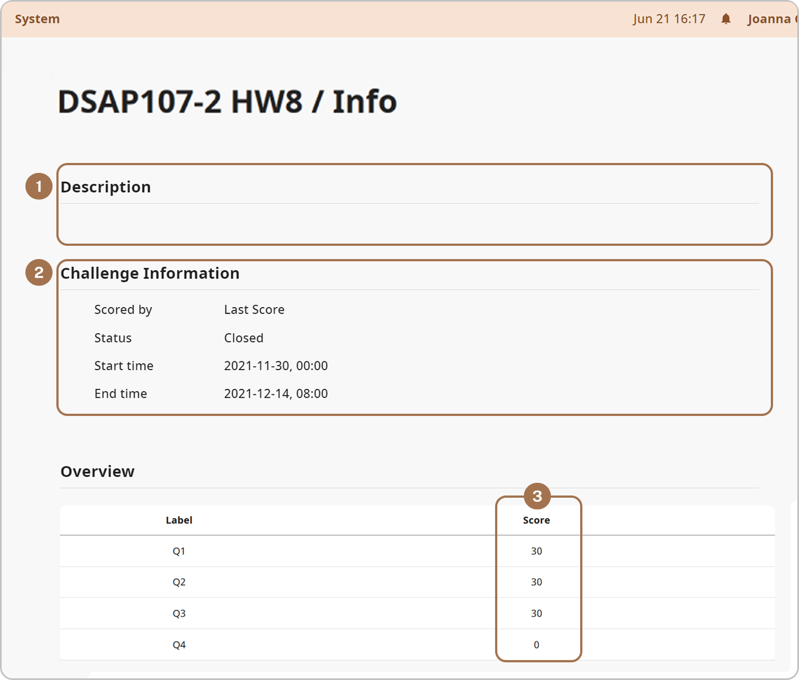
1. 當作業描述為空時則不顯示
2. 將 Overview 提前顯示，讓使用者更快看到作業繳交情形
3. 顯示作業分數與總分，幫助判斷與滿分的差距
4. 加上 Verdict 欄位，一目了然作業完成狀況
3/3 位使用者表示在表格中顯示總分，不用點進去看很方便

目標 #2 · 打造流暢的操作體驗
提供清晰且友善的側邊欄回饋
原先的返回鍵會返回系統的上一個階層而非上一個瀏覽的頁面，經常讓使用者感到困惑。因此，我們在返回鍵上標示將前往頁面的名稱，並增加標示作業繳交狀態的圖示，鼓勵使用者完成作業。
探索更快進入繳交入口的方式
我們以簡化繳交步驟為目標探索了 3 種繳交作業的方式。雖然方案二（Tab）在測試中獲得較多的正面回饋，但需將系統進行大幅度的改動。因此，我們選擇方案三（直接上傳檔案）的設計，在不增加開發負擔的情況下，仍能符合學生的使用習慣。
目標 #3 · 提供清楚的系統提示
在助教系統中有很多專有名詞與資料輸入的格式。然而，在操作時因為缺乏明確的系統提示，使用者常常需要自行摸索一段時間才知道如何使用。因此，我們提供更清楚的系統提示，並統一錯誤訊息的格式。
清楚解釋專有名詞與資料輸入規則
統一錯誤訊息格式，提供可能原因與解法
只說明錯誤類型，使用者不知道下一步該怎麼處理

統一格式並補上可能原因與解法，協助使用者快速排錯

目標 #4 · 提升跨裝置體驗
過去 PDOGs 並沒有提供手機版介面，但許多學生習慣用手機隨時查看成績與作業資訊。為此我們導入響應式設計，讓學生能在不同裝置間順暢切換。
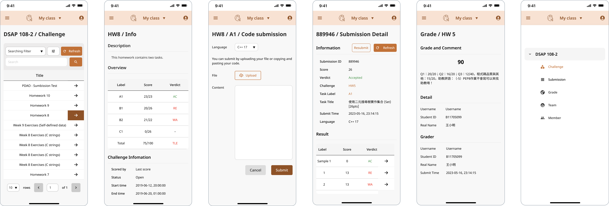
設計系統與元件規範

縮短繳交時間，並降低助教學習成本
此次改版透過重整資訊架構與系統流程，簡化原先繁瑣耗時的繳交作業流程；在助教系統中提供清楚系統提示，讓助教更輕鬆掌握系統操作，降低學習成本。
專案中的反思 & 學習
增進時程掌控與團隊溝通的能力
第一次擔任設計組長的角色，從一開始訂定專案目標到規劃時程都一手包辦，了解到在和內部溝通時需要非常了解每個團員的進度，以及做決策時要謹記其他團隊的需求與時程，並將其納入決策及時程規劃的考量。
現有系統上改進帶來的限制
一開始有很多改進的點子在和工程團隊討論後都無疾而終，覺得非常可惜。認知到在一個已經相對完整的系統下重新設計時不能只有天馬行空，而是要在現有的系統下找到最可行的改進方式。